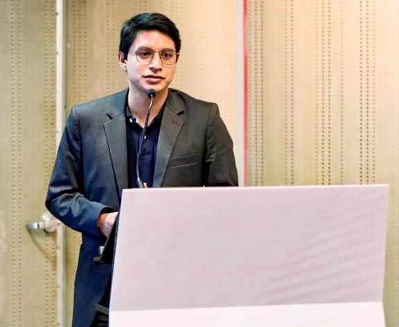

I am a Peruvian economist with over seven years of experience in economic development, impact evaluation, and social innovation, with a focus on and early childhood development, education policy, and rural education.
Currently, I work as Research Coordinator at the Behavioral Insights and Parenting Lab at UChicago. Previously, I led Ayni Lab Social at Peru's Ministry of Development and Social Inclusion, worked at IDinsight in Lusaka, Zambia, evaluating the impact of a large-scale cash transfer program in Malawi, and held roles across labor and productive sectors.
I lead the Monitoring, Evaluation and Learning area at Sinkumunchis Foundation, and previously coordinated the Academic Support for Public Schools program at Yachay Wasi NGO, serving 100+ rural students. I am passionate about leveraging public policy to expand opportunities for vulnerable communities. Among life's simple pleasures, I find joy in football — proudly supporting Universitario de Deportes — and immersing myself in the rhythms of cumbia and salsa.